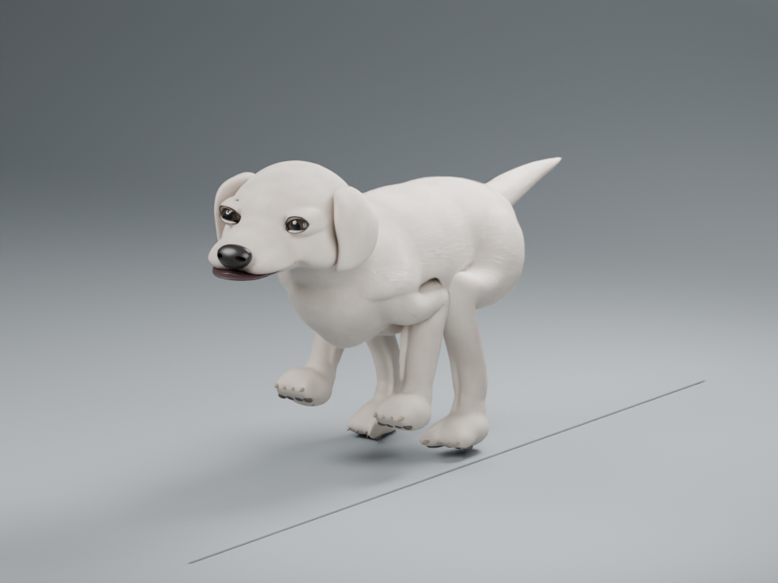

← 정적 모델 비교
V3 · 모션 수정 4 · 관절과 몸통 연결
달리기, 한 프레임씩 보기
다리를 접을 때 눌리던 살과 발목의 단차를 보정했어요. 같은 프레임에서 이전 모습과 번갈아 비교해보세요.

3/4 · 1 / 48
1 / 48
3/4 프레임을 준비하고 있습니다.
뒷발로 밀어내기
가까운 앞다리—
가까운 뒷다리—
반대쪽 앞다리—
반대쪽 뒷다리—
방향키 ← →로 한 프레임씩, Space로 재생·정지합니다. 최초에는 정지 상태이며 화면을 벗어나면 재생을 멈춥니다.
비교하는 방법
위의 비교 메뉴를 바꾸면 같은 방향·같은 프레임에서 보정 전후를 확인할 수 있어요. 10·27·35프레임의 접힌 관절과 발목을 살펴보세요. 달리기 순서와 귀·꼬리 움직임, 얼굴은 그대로 유지했습니다. 이전 파일도 보존했어요.
이 시안의 범위
48프레임 · 기준 60fps · 한 주기 0.8초. v3의 털 밀도를 ¼로 줄여 동작을 검토합니다. 정적 삼각형 메시를 시험적으로 변형한 것으로, 완성된 캐릭터 리그나 실제 달리기를 검증한 모션은 아닙니다. 접힌 관절의 부피와 몸통 연결에는 추가 보정이 필요합니다.
바닥 선은 접지 높이를 보는 기준입니다. 제자리 보행 검토이므로 발은 지지 구간에서 화면 뒤쪽으로 움직입니다. 운동장을 돌아다니거나 공을 따라가는 기능은 연결하지 않았습니다.